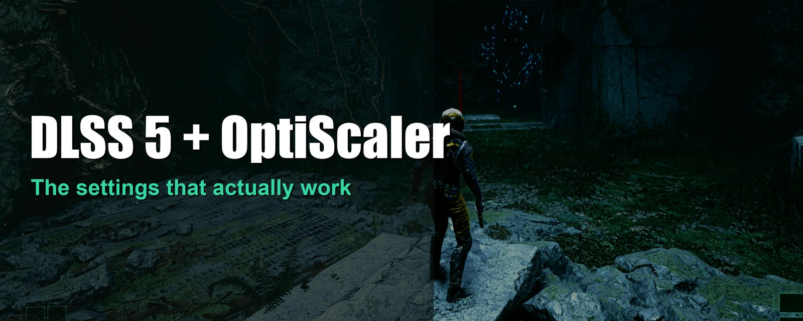
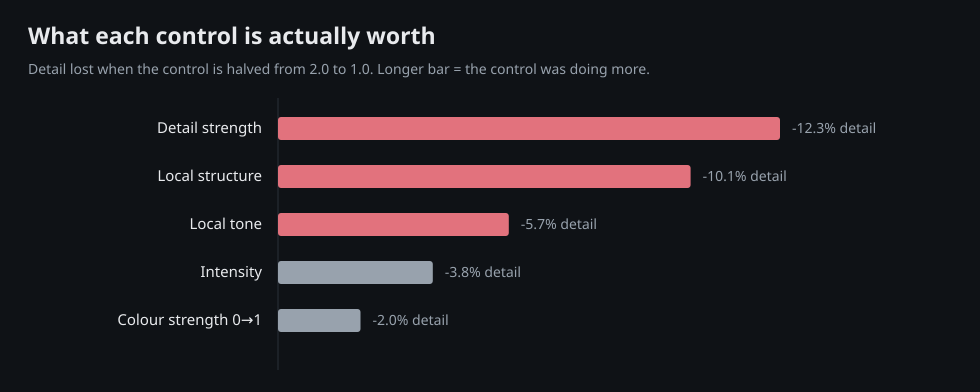
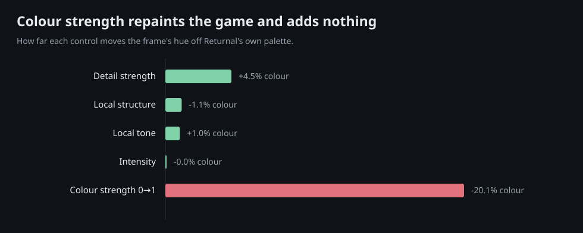
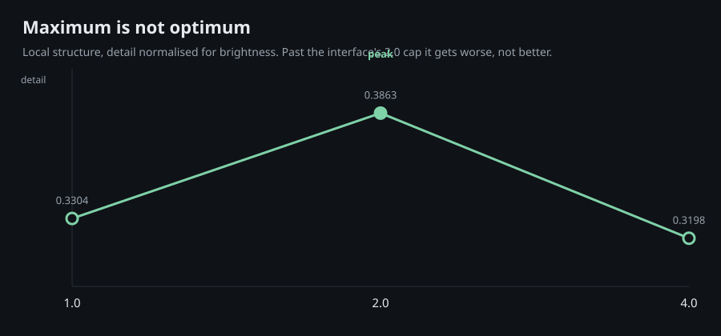
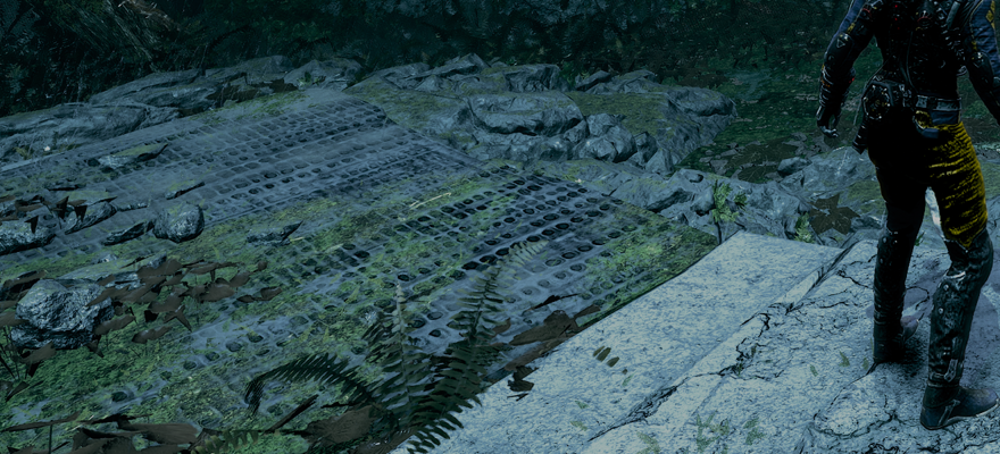
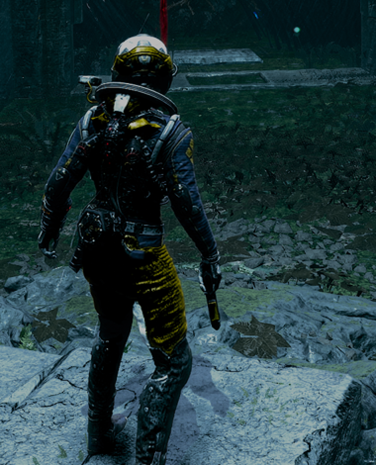
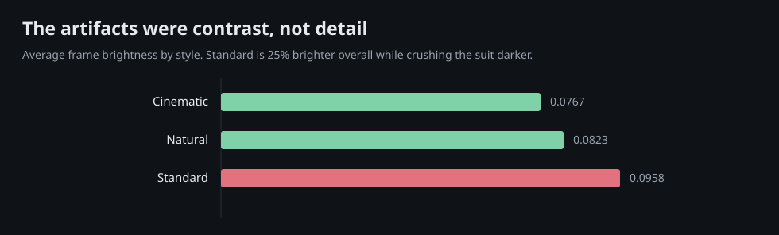
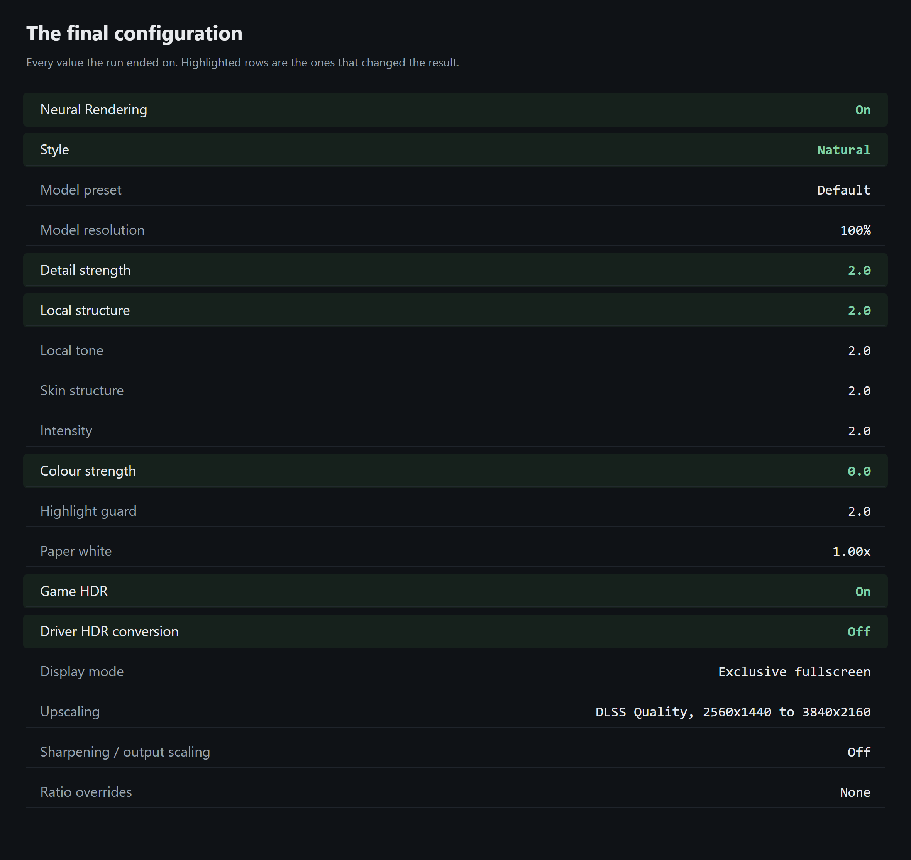

Measurement write-up
The second attempt at this was better than the first in every way that matters: the frame rate roughly doubled, the game's own HDR started working, and three of the controls turned out to do the opposite of what their names suggest. This is everything that survived measurement, including the parts where the measurement was wrong and my eyes were right.

There is a short plain-English glossary in the next section. Nothing below assumes you already know what an upscaler or a depth buffer is. If you do know, skip it; the results start at “What changed”.
dxgi.dll, d3d12.dll). Windows loads the mod instead, and the mod passes calls through. Two mods wanting the same slot, or the same intercepted function, is where conflicts come from.A ReShade-based implementation of DLSS 5 in Returnal breaks the game's own HDR, and the only way around that is to run the game in SDR and convert to HDR afterwards with a driver-level feature.
OptiScaler needs no such workaround, and the reason is worth understanding, because it explains a lot of confusing advice circulating about this technology.
The model only understands SDR. It was trained on finished, ordinary-brightness photographs. A game's internal frame is not that; it is linear and open-ended, with sunlight values thousands of times brighter than paper white. Feed that to the model raw and everything above SDR is simply chopped off, which wrecks the colour.
The fix is to map the HDR frame down to something the model recognises, run it, then rescale the answer back so its brightness lands where the original said it should, with the hue held in place. An implementation that does this works with HDR. One that does not, does not.
The implementation used here does it, and says so in its own log while running:
DLSS-NR: the game's DLSS buffer is linear HDR so the colour transform is on IFeature::SetInitParameters Init Flag IsHdr: true DLSS-NR running at 3840x2160, guides 2560x1440
Measured off the resulting frame rather than taken on trust: peak 1,527 nits, with 2.3% of pixels above SDR range. That is genuine HDR output, not an SDR image stretched afterwards.
So the practical advice inverts. Turn the game's HDR on, and leave driver-level HDR conversion off. The whole SDR chain, and the engine settings that forced HDR off, can go.
The previous implementation cost close to half the frame rate. This one costs far less for a comparable effect, and the reason is architectural rather than a matter of tuning.
The ReShade route inserts itself at the end of the frame, at the moment the finished image is handed to the display. That position has two consequences, and both are expensive.
First, at that point the interface has already been drawn, so the model sees your health bar and your text and tries to invent detail in them. Second, and this is the costly one, frame generation has already happened. If the card is generating three extra frames for every one the game renders, a pass at the end of the chain runs four times instead of once.
The implementation used here runs the pass immediately after upscaling and before the interface is drawn. It therefore never sees the HUD at all, no masking required, because the HUD is not there yet, and it costs one run per rendered frame regardless of how many frames are generated afterwards. Generated frames inherit the result for free.
This is why a 7.8 ms pass can coexist with a 133 fps frame rate. It is not a faster model. It is the same model in a better place. NVIDIA's own figure for the model is about 8 ms per 3840x2160 frame on this class of GPU, with roughly 731 MB of peak memory, while sharing the card with the running game. The 7.8 ms measured here lands on that number, which is a useful check: the cost is the model, and where the pass runs decides what that cost does to the frame rate.
Screen-capture software that uses “game capture” injects itself into the game to intercept the same final-image step that ReShade hooks. Two things wanting that one moment is a genuine conflict, and it shows up as stutter in the recording while the game itself looks perfectly smooth on screen. The relevant bug report upstream has been closed as not planned, and the one setting that used to help has been removed from the software, so this is not going to be fixed.
The implementation used here does not hook that step. It intercepts the upscaler instead. Game capture was tested against it and recorded a complete stream; 3,597 frames against 3,596 expected, no container-level drops. So the rule is not “DLSS 5 breaks recording”. It is “ReShade breaks recording”, and which implementation you choose decides whether you have the problem at all.
Every reading below is 14-18 frames in live gameplay, in one fixed spot, with the character parked and not moving. Two numbers are reported together:
Both matter, because the goal was more realism, not a different-looking game. A control that raises structure while leaving colour alone is buying you something. A control that only moves colour is repainting the game.
Each control was halved from 2.0 to 1.0 in isolation and measured against the same baseline. Structure is normalised for brightness, because a brighter frame raises local contrast mechanically and would otherwise flatter the result.
| Control (2.0 → 1.0) | Structure | Colour | Ratio | Verdict |
|---|---|---|---|---|
| Detail strength | −12.3% | +4.5% | 2.8 | Strongest effect |
| Local structure | −10.1% | −1.1% | 9.2 | Cleanest |
| Local tone | −5.7% | +1.0% | 5.8 | Small, positive |
| Intensity | −3.8% | −0.0% | ; | Below noise floor |
| Colour strength (0 → 1) | −2.0% | −20.1% | ; | Colour only |
The ratio column is structure gained per unit of colour shifted; how much realism you get per unit of departure from the artist's palette.

It produces nearly as much detail as the strongest control while moving colour by 1.1%, which is barely distinguishable from nothing. It corresponds to the physical properties that make a surface read as real: material definition, the darkening in crevices where light cannot reach, the soft translucency of skin and leaves, and reflections. If you only touch one control, touch this one.
This is the finding that most contradicts the obvious instinct. Raising it from 0 to 1 moved the frame's colour by 20% and added no structure at all.
What it does is let the model supply its own idea of what colour each object should be. The model has never seen Returnal and does not know what it is looking at; it sees something metallic and lit and decides, from photographs of the real world, that it should be a different colour. In testing, objects that are deliberately blue turned yellow.
Worth noting which direction the colour moved: down. The model's palette is less saturated than the game's, because photographs of the real world are less saturated than a hostile alien world designed by artists. For a game whose entire visual identity is aggressive biological colour, that is exactly the wrong direction.
Photorealism is not “the model's opinion, at maximum”. It is real material, light and micro-detail applied to the artist's actual world. Keep the model's detail; keep the game's colour. Set this to zero.

Halving the control described as the overall strength of the effect moved structure by 3.8%; underneath the noise floor. It is not the master dial its name implies. Either the runtime has it largely inert, or it scales something this scene does not exercise.
The in-game interface caps these controls at 2.0. It is tempting to assume that is an arbitrary limit and that the configuration file will let you go further. It will; the runtime accepts 4.0 and confirms it. But:
| Local structure | Structure | Colour |
|---|---|---|
| 1.0 → 2.0 | rises 11.3% | ; |
| 2.0 → 4.0 | falls 17.2% | shifts 10% further |

The curve is a hump, not a ramp. At 4.0 the setting is worse on both measures at once: less detail and more colour distortion. Over-driving the model does not produce exaggerated realism; it pushes it into a regime where it flattens and washes its own output. The interface cap turns out to be well chosen rather than arbitrary.
One style setting measured +50% structure: by a wide margin the largest number of the entire session, and with no colour cost. On the numbers it was the clear winner.


Looking at it, it was the clear loser. Flat stone had grown a repeating woven pattern that does not exist in the game. The character's suit had crushed to black, losing all its material. Surfaces shimmered in motion.
All three are classic symptoms of the model being pushed past its intended tolerance: harsh artifacts around character outlines, lighting pushed out of balance, and invented structure where the source surface had none for the model to work from. And every one of them raises local contrast, which is exactly what the metric was counting. Invented pattern noise and genuine material detail are the same thing to an edge detector, and completely different things to a person.

The clue was in a number nobody was looking at. Across the three styles, average frame brightness rose steadily: 0.0767 → 0.0823 → 0.0958. The style with the artifacts was 25% brighter overall; while simultaneously crushing the suit darker.
Brighter overall with darker darks is not brightness. It is contrast. And that single property explains every symptom at once: raised contrast reads as +50% “structure” to the metric, crushes the suit to black, and amplifies the model's faint invented pattern into something plainly visible. Three complaints, one cause. There is a documented reason this direction exists at all: the model produces an RGB image and cannot recover scene information that is missing or degraded in its input, so weak or corrupted evidence may be preserved or amplified rather than repaired. Pushing a control past the point where the input supports it is asking for exactly that.
Two purpose-built instruments could not detect a problem that was obvious on sight. Both are reported here because the failures are more useful than the successes.
After the artifact discovery, a second instrument was built specifically to catch what the first had missed: frame-to-frame flicker to catch shimmer, spectral analysis to catch repeating patterns, and a shadow measure to catch the crushed suit. Across all three styles it returned flicker of 0.0133, 0.0141 and 0.0143; against a spread of ±0.001. Indistinguishable. The instrument built to see the artifact could not see the artifact either.
Separately, an automated sweep was found sitting on the game's pause menu, and the measurement tools would happily have recorded that screen as if it were the scene. That is now impossible: they refuse to measure unless three consecutive frames agree the game is rendering the world, with the thresholds calibrated against an actual menu and an actual scene rather than guessed. Every reading taken before that guard existed was discarded rather than kept, because there is no way to prove afterwards what those frames were looking at.
The honest summary: measurement was decisive for the controls that scale one thing; it settled colour strength, intensity, and the shape of the over-driving curve, all of which are invisible to the eye. It was useless for judging whether the result looked right. Those are different questions and they need different instruments, and one of the instruments is a person.

Neural Rendering On Style Natural Detail strength 2.0 Model preset Default Local structure 2.0 Intensity 2.0 Local tone 2.0 Skin structure 2.0 Colour strength 0.0 Model resolution 100% Highlight guard 2.0 Paper white 1.00x
Style is a genuine taste decision rather than a measured one. The three options were indistinguishable on every artifact measure; the choice was made by looking. Natural keeps the game's own colour and lighting intact. The cinematic option is a deliberate filmic grade; a legitimate look, but a stylistic one rather than a realistic one. The standard option is the contrast-heavy setting described above, and it is the one to avoid.
Model preset was tested across all three of its values and produced differences of 0.2% and 0.8%; both inside the noise floor. If they differ, they differ in where they place detail rather than how much, and no measurement here could resolve it.
Frames were captured from the desktop in 16-bit floating point. This matters: an 8-bit capture cannot represent an HDR signal and clips everything above SDR range, which in earlier work was enough to reverse the conclusion entirely. Structure is average local contrast; colour is the magnitude of the chromatic components after converting to a perceptual colour space, so that a single bright highlight cannot dominate the score.
Each reading is 14-18 frames with the character stationary, and reports its own spread. The noise floor is twice the larger spread of the two readings being compared, and any difference smaller than that is reported as noise rather than as a result. One control was changed at a time; where two changed between readings, the comparison was recomputed against the correct baseline rather than the previous reading.
The settings that require the game to restart were tested by suspending the run first, so the game reloaded to the same position and readings stayed comparable across restarts. What the runtime actually accepted was read back from its own log every time, because a value written to a configuration file and a value the model was built with are not the same thing, and on more than one occasion they were not.
Turn Neural Rendering on. Use a native HDR game with an implementation that runs the pass before the interface is drawn; that decision buys you more performance than any setting. Set colour strength to zero and leave it there. Put local structure and detail strength at the interface maximum and do not go past it through the configuration file. Choose the style by looking, not by measuring.
And then look at the picture. Every genuinely wrong turn in two of these write-ups was a number that looked convincing: an 8-bit capture that reversed an HDR result, a frozen frame that removed an input the model needs, a sharpness score that rewarded visible speckle, a sweep that promoted scene drift into a 71.7% “winner”, and a +50% result that was a tiled pattern on a rock. The measurements are worth building, they settled several questions the eye cannot, but not one of them caught the failure that mattered most.